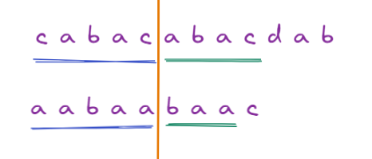
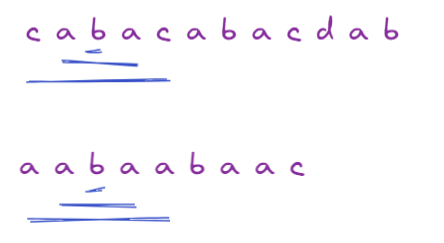

Remember that there is no code faster than no code.
Problem Statement
Given a string s, return the number of palindromic substrings in it.
A string is a palindrome when it reads the same backward as forward.
A substring is a contiguous sequence of characters within the string.
Example 1:
1 | Input: s = "abc" |
Example 2:
1 | Input: s = "aaa" |
go_figure 🤔
There is a straight forward O(n2) solution to this, i.e. iterate over all combinations of strings and if it is a palindrome increment counter.
Initial thoughts over optimizing above solution:
Moving in one direction seems reduntant, as some cases can be entirely eliminated for checks.
For example, if I find a palindrome, I can be sure (other than exceptions), that there is no palindrome until I go to 2 * length(palindrome) - 1

Even, in the above case, I am skipping the end line, but if no palindrome found, I still have to traverse O(n2).
For each position, if I fan-out if left and right match, if they don’t increase index.

The above solution has some missing cases, it only checks for odd palindromes. Need to rectify this. For each position, I can start with pos (i) and (i,i+1)
Pseudo code
1 | function countSubstrings(str) { |
Look at the below code, see if it make sense…
code (js)
1 | function countSubstrings(s) { |